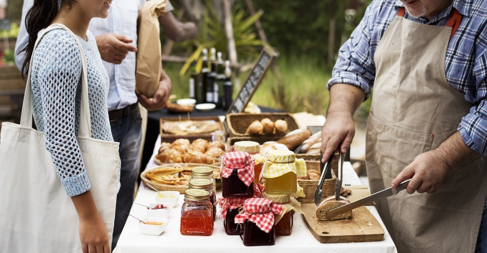
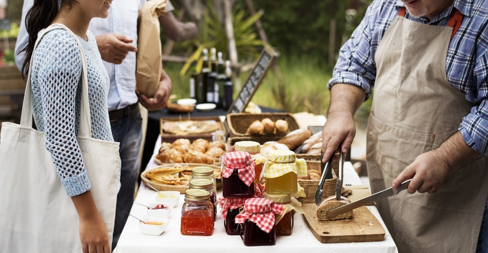

All the best Best Tasting, Yummy Looking and Mouth Watering food from around the world.


Green pancakes have quickly become a staple food in our household. We keep these stocked in the freezer for a snack or quick bite for the grown ups, and for a super healthy dinner meal for our daughter. Green pancakes are a great alternative to all of the processed or super sweet, fruity baby foods out there. They are savory, yet a big hit, even with the little ones.
Everyone seems to claim a favorite style of cheeseburger, whether it's classic American cheese or something more adventurous, like a blue cheese burger. I decided to really put the concept to the test to find out which is the absolute best cheese to use on a burger, considering flavor and meltability.
Black Coffee and a soothing rasing rolled bun

These Easy Chicken Tacos with Avocado Salsa Recipe will soon be your go-to recipe for taco Tuesday. Made with a simple and delicious avocado salsa recipe.Gather your friends, because next Taco Tuesday is going to be a real treat when you serve up these Chicken Tacos with Avocado Salsa. When people think of tacos, they instantly think of ground beef or even ground turkey. But it is time to change things up a bit. Tender chicken makes tasty filler, regardless of whether you prefer hard, crunchy shells, or soft tortillas for your wrap.
Crème brûlée or crème brulée, also known as burned cream, burnt cream or Trinity cream, and virtually identical to the original crema catalana, is a dessert consisting of a rich custard base topped with a layer of hardened caramelized sugar

colorful composition of delicious pizza, vegetables and spices. Delicious freshly cooked homemade vegetarian Italian pizza topped with cheese, vegetables and fresh herbs and served.

A vegetarian pizza is one of our favorite meatless Monday meals, like this fresh version topped with cherry tomatoes and red onions. Before adding the pizza to the pizza stone, give plenty of time to preheat in the oven. That’s the key to producing a crisp, well-browned crust. served on an old wooden surface.
greek olive oil cheese olives starter salad food aliment bread uncooked
The basil and lemon in this dish complement each other so nicely. Using fresh ingredients really makes a big difference.
Peri Peri Fish with Skinny Fries and Cucumber Salad

Grilling Crab Legs is so easy – it’s my favorite method to cook them! There’s no looking for a big pot or making a mess in the kitchen. Just thaw the legs and heat them on the grill. Then crack them open and enjoy! Some of my other favorite ways to eat crab are Baked Crab Cakes, Crab Cauliflower Fried “Rice” and Tomato, Corn, Crab and Avocado Salad.
Beef noodle soup that makes great use of a roast beef carcass. With the last days of winter upon us, this soup has been a Taste member favourite over the last couple of months, so, if you haven't already, give it a try!
To give it a kick up the backside, I like to finely chop up a garlic clove and a little fresh chilli, then mash them with a pinch of salt and stir it through before serving for an extra punch.
deliciously gooey cinnamon buns have never been easier. Also easy—DIY sticky buns and sweet rolls. Here are F&W's best buns to make this weekend morning gloom.

This is such a simple salad to prepare and the recipe can’t be more clear. It’s perfect for the summer because both primary ingredients are in season. And really, you only need seven ingredients in all, so you shouldn’t pass this one by.
I didn’t like beans growing up until I got to boarding school and tasted the beans and dodo (fried plantain) and I fell in love. I don’t know what it was about the boarding school beans, might have been the tiny weevils, when you got tired of picking them out you just ate. I later lost the taste for beans again until I met Adalu and I am in love again, this time I know this love is here to stay, #truelove. Adalu, beans and corn porridge, is so scrumptious, a marriage between sweet and savoury, what can beat that.

Here is a celery apple salad that is bright, cool, and crisp as a breezy fall day. It’s hard to determine the best thing this dish has going on. It’s a great combination of rich salmon and crème fraîche, cut with a squeeze of lemon, and paired with a warm potato salad. Mushrooms for earthiness, celery for crunch, and totally worthy of being accompanied by candles and wine. Oh, and once you have the potatoes are boiling, you’re about 15 minutes away from dinner.

Autumn Salad with Figs,toasted nuts, bacon and Blue Cheese

A cheese sandwich is a sandwich made with cheese on bread. Typically semi-hard cheeses are used for the filling, such as Cheddar, Red Leicester, or Double Gloucester Lettuce Radish Salad with Lemon Vinaigrette is as simple as it gets! It has a crisp and crunchy texture and is lemony good. It’s so fresh, versatile, quick and easy to make

I love breakfast. Eggs. Bacon. Hash browns. Pancakes. Waffles. Sausage. You name it, I love it. Except for biscuits and gravy! I often make breakfast for dinner at our house, and I call it “Sunrise at Sunset.” Pretty sure that came from the cafeteria in college.

Eaten plenty of soft shell crab but never prepared it? These crabs are easy to deal with because of their very soft, almost thin plastic-like shell. They also make the most fun Halloween snack with small slider buns due to their spider-like appearance!
When Rebecca from Square Meal Round Table invited me to collaborate on their 4th ingredient collaboration, carrots, I was totally on board and knew that I wanted to take the delicious sweet carrot and pack a bit of punch to it. I’m joined by many talented bloggers for this fun event. You can find a list of them below in recipe notes, you can also follow our hashtag on Instagram #24carrotgoals for so much inspiration!

My dad is the king of making pancakes. Every Sunday since I was a child I would wake up to the smell of bacon, pull back my covers and walk sleepily to the kitchen where he would be standing with a fork in hand turning the thin slices that sizzled in the frying pan. “Good morning, Pumpkin,” he would tell me as I sat down and poured myself a glass of orange juice :: spremuta. My stomach would rumble as I watched him set the strips onto a plate covered with paper towels, the oil leaving a yellow mark like a line of wet paint on a white house.
This delicious Italian chicken roast pot needs is ready for the oven in only five minutes and makes a great alternative to your Sunday roast. Tastes great with mash or buttery risotto rice.
A veggie burger is a burger patty that does not contain meat. These burgers may be made from ingredients like beans, especially soybeans and tofu, nuts, grains, seeds or fungi such as mushrooms or mycoprotein
Sweet cinnamon raisin rolls recipe. As a delicious breakfast snack or for lunch wiht a cup of coffee.
 


.jpg)

.jpg)